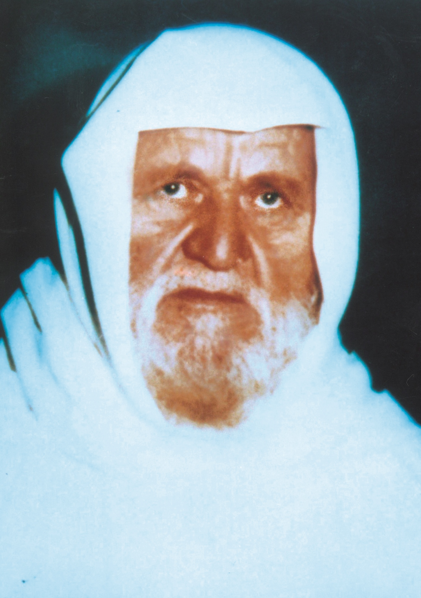

মুহাম্মাদ নাসিরুদ্দীন আল-আলবানী
১৯১৪-১৯৯৯
যুগশ্রেষ্ঠ হাদিস বিশারদ
মুহাম্মাদ নাসিরুদ্দীন আল-আলবানী ছিলেন বিংশ শতাব্দীর একজন সিরীয় ইসলামী চিন্তাবিদ, যিনি হাদীস ও ফিক্ব্হ্ শাস্ত্রের ক্ষেত্রে বিশেষ অবদান রেখেছেন। তিনি পেশাগতভাবে একজন ঘড়ি মেরামতকারী ছিলেন এবং এর পাশাপাশি তিনি ছিলেন একজন প্রামাণ্য লেখক ও বক্তা। তিনিই প্রথম সালাফী শব্দটিকে একটি শ্রেণীগত প্রতীক হিসেবে ব্যবহার করেছিলেন। তিনি সিরিয়ায় তার খ্যাতি প্রতিষ্ঠা করেন, যেখানে তার পরিবার ছোটবেলায় স্থানান্তরিত হয়েছিল এবং যেখানে তিনি শিক্ষিত ছিলেন। আল-আলবানী সহিংসতার পক্ষে সওয়াল করেননি, প্রতিষ্ঠিত সরকারের প্রতি নীরবতা এবং আনুগত্য পছন্দ করতেন।
কাজ সমূহ- বই সমূহ
- তিনি প্রধানত হাদীস এবং বিজ্ঞানের ক্ষেত্রে শতাধিক গ্রন্থ প্রকাশ করেছেন।
- রাসূলুল্লাহ সাঃ এর নামায/সালাত সম্পাদনের পদ্ধতি
- সিলসালাত আল-হাদীস আস-সহীহাহ্
- সিলসালাত আল-হাদীস আয-যায়েফাহ্
- ইলমে হাদীসের গুরুত্ব ও মর্যাদা
- আরো অসংখ্যা বই রচনা করেছেন।